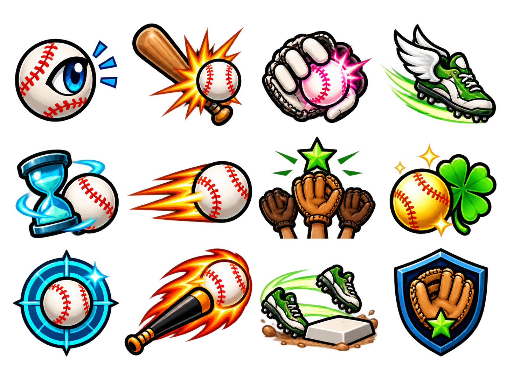

BASEBALL HEROES · 1.0.33SKILLS con doce emblemas de béisbol
Publicada y comprobada por HTTPS. La cuenta QA se retiró y se conservaron las cuentas anteriores.
Esta entrega reemplaza las letras de relleno de las habilidades por doce sprites: ojo de bateo, bat y pelota, guante, zapatos con alas, reloj, hits, equipo, trébol, diana y capitán. El catálogo incorpora fichas con relieve, estrellas de rango y un detalle que separa el efecto actual del siguiente.
Abrir el juego · HOME → TEAM → SKILLS · Notas y pruebas
De letras a ilustraciones reconocibles
 Antes · 1.0.32 · P, C, T y L dentro de cuadros
Antes · 1.0.32 · P, C, T y L dentro de cuadros Después · 1.0.33 · doce sprites, rangos y bloqueos visibles
Después · 1.0.33 · doce sprites, rangos y bloqueos visiblesLa cabecera, los bordes, los reflejos y los botones comparten el marco del resto del juego. El sprite de la habilidad elegida aparece ampliado. El panel inferior mantiene visible la habilidad activa para distinguirla de la ficha que estás consultando.
Las habilidades bloqueadas aparecen en gris. Al cumplir sus requisitos recuperan el color; las estrellas indican sus tres rangos. Seleccionar una ficha no la compra ni cambia la habilidad activa.
Aprender, activar y consultar el siguiente rango
 LEARN · compra de un rango y puntos restantes
LEARN · compra de un rango y puntos restantes LOCKED · requisito en español y controles desactivados
LOCKED · requisito en español y controles desactivadosLos costes siguen siendo los existentes: 1 punto para aprender, 1 para el segundo rango y 2 para el tercero. LEARN / UPGRADE se desactivan si faltan puntos o requisitos. ACTIVATE requiere haber aprendido la habilidad y la habilidad ya activa queda marcada ACTIVE. MAX RANK impide compras adicionales.
 Rango máximo · efecto actual y compra desactivada
Rango máximo · efecto actual y compra desactivada Lucky Swing · desbloqueada en la condición avanzada de la cuenta QA
Lucky Swing · desbloqueada en la condición avanzada de la cuenta QASe conserva el catálogo y sus efectos actuales. La comparación de nivel 12 es una condición preparada únicamente en la cuenta temporal, para comprobar requisitos y rangos; no aumenta el nivel de tu personaje. Las cuentas nuevas siguen empezando en nivel 1/Rookie, con 6,000 Coins, cero SKILL POINTS y Batting Eye en rango 1. Para probar LEARN se concedió un punto solamente a la cuenta QA.
Los controles y nombres están en inglés; las explicaciones, requisitos y consejos están en español. El doble clic rápido no gasta dos veces los puntos.
Arte nuevo, guardado sin alterar sus píxeles

Atlas nuevo reconstruido con image_gen · contornos negros y sombreado de dos dimensiones
Este arte se creó para el remake con la herramienta integrada image_gen. No se presenta como iconos originales recuperados ni como un árbol de habilidades confirmado por los videos. Se copió el PNG con su transparencia y sus bytes intactos; las ventanas se preparan dentro del juego mediante copyPixels y se comparten entre fichas. La variante gris también se prepara una sola vez mediante copias de canales, sin filtros animados ni trabajo de píxeles por fotograma.
Prompt completo y procedencia · SHA256, dimensiones y doce ventanas. Las estrellas, bordes y botones son elementos de interfaz nativos. No cambian el héroe ni la cabeza de bateo aprobada de 0.8.6.
Pruebas de puntos, bloqueos y guardado
El recorrido local usa WebMain de producción en Chrome: registro sin código, creación de personaje, entrada desde TEAM, aprendizaje, doble clic, falta de puntos, bloqueo por nivel, activación, CLOSE, Esc y recarga. Comprueba el coste de rango 2 a 3, el máximo y Lucky Swing al cumplir sus requisitos. Coins, energía, equipo, roster, apariencia, cartas y cargas de bat se mantienen, salvo los campos de habilidad que cambia la acción elegida.
Un diagnóstico privado comprueba las doce fichas y sus textos, bloqueos en Rookie, requisitos de una habilidad previa, rangos máximos, tonos grises efectivos de los sprites y controles ya retirados. Ese SWF y su callback no están incluidos en el paquete público.
Recorrido local de producción · Catálogo completo · Fuentes y paquete
El recorrido de producción pasó también por HTTPS. Prueba pública · 143 archivos verificados · Retirada de la cuenta QA.
GameData, catálogo, reglas, motor, servidor y cliente web conservan sus fuentes. Guardado v24 y SQLite v4, sin reiniciar cuentas o temporadas. Se verificó una copia SQLite antes de publicar. Para disponer de espacio se archivaron localmente las bibliotecas antiguas 1.0.26 y 1.0.27 con sus hashes; 1.0.32 y 1.0.31 siguen en Railway para revertir. Archivo reversible. La prueba entre dos computadoras físicas sigue pendiente.